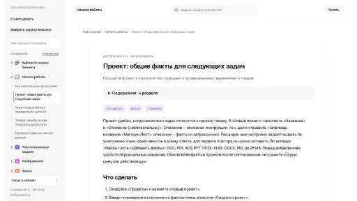
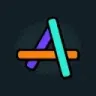

МолекулаАгрегаторы нейросетей
Молекула объединяет модели для текстов, изображений, видео и музыки. В одном аккаунте можно подобрать инструмент под этап работы, сохранить инструкции проекта и использовать готовые роли.
К задаче в МолекулеУправление знаниями: Определите источники и права доступа. Сравните поиск, обновление документов и ссылки на материал в ответах.
Подготовьте небольшой документ с проверенными фактами, правилами и открытыми вопросами команды. В Молекуле можно использовать общий контекст для следующих текстовых задач; поддерживайте актуальную версию материала.
Собери краткий паспорт нашей услуги по этим заметкам: состав работ, ограничения, контакты внутри команды и вопросы на уточнение. Отмечай источник каждого факта и дату версии.

Молекула объединяет модели для текстов, изображений, видео и музыки. В одном аккаунте можно подобрать инструмент под этап работы, сохранить инструкции проекта и использовать готовые роли.
К задаче в Молекулеintercom.help связывает базу знаний со средствами клиентской поддержки Intercom. Предусмотрены ИИ-подсказки чат-ботов, работа на разных языках и настройка помощи по нескольким каналам. Обратная связь используется при доработке материалов, объединяя ответы поддержки с развитием содержания, доступного клиентам для самостоятельного поиска.
Knowledge Drive организует сведения команды и помогает обращаться к её знаниям. ИИ извлекает и обновляет материал во время встреч и разговоров. Продукт связывает обсуждения сотрудников с накоплением рабочего контекста, чтобы информация из общения переходила в организованное пространство знаний для дальнейшего обращения.
Сравнивать «Lateral.io» с другими инструментами раздела «Поиск информации» удобнее на одинаковом исходном материале.
«Pika (trypika.com)» помогает организовать разговор с чат-ботом. Дополнительно «Pika (trypika.com)» помогает организовать работу с базой знаний.
Tettra организует внутреннюю базу знаний компании с ИИ-функциями. В наборе предусмотрены подготовка документов, работа с отобранной информацией и помощь через бота Kai. Продукт связывает накопление рабочих сведений с обращением команды за ответами, чтобы содержание базы использовалось в текущих задачах, а не только хранилось отдельными страницами.
Wordware используют, чтобы связывать действия в автоматизированный процесс. Ещё одно направление работы: организовывать материалы и поиск по ним.
ChatCube создаёт ИИ-чат-ботов, которые отвечают по выбранному документу или содержанию сайта. Для подготовки такого помощника не требуется программирование. Продукт связывает исходный материал с вопросами пользователя, позволяя рассматривать содержание через разговорный интерфейс подготовленного бота в рамках конкретного источника.
«ContextClue» помогает организовать работу с базой знаний.

Fabric относится к инструментам, которые помогают собирать видео с цифровым ведущим. Ещё одно направление работы: организовывать материалы и поиск по ним.
«Favird» представлен в разделе «Ресурсы». При выборе проверьте нужную операцию и условия работы с результатом.
«FractalGPT Docs QA» помогает организовать работу с базой знаний.

Glean используют, чтобы исследовать тему и разбирать найденную информацию. Ещё одно направление работы: обрабатывать голосовые обращения.
«Hansei» разбирает данные для рабочего анализа. «Hansei» также помогает организовать работу с базой знаний.
Kive помогает организовывать творческие материалы в общей визуальной библиотеке с участием ИИ. Пользователи собирают идеи и делятся ими внутри одного пространства. Продукт ориентирован на авторов визуального контента, связывая исследовательскую подготовку и хранение замыслов для дальнейшей работы над проектом.

Logically относится к инструментам, которые помогают готовить текст по теме и требованиям к содержанию. Ещё одно направление работы: сокращать материал до основных положений.
«Onri» представлен в разделе «HR». При выборе проверьте нужную операцию и условия работы с результатом.
«Petal» разбирает содержимое документов.
«Docsie 2.0» помогает организовать работу с базой знаний.

Inbox Zero помогает организовать электронную почту с использованием ИИ. Среди функций указаны массовая отписка от рассылок, расстановка приоритетов, автоматические ответы и аналитика переписки. Инструмент предназначен для управления потоком входящих сообщений, когда важные обращения нужно отделять от подписок и других менее приоритетных писем.
Linkly AI рассчитан на задачи, где нужно исследовать тему и разбирать найденную информацию. Ещё одно направление работы: организовывать материалы и поиск по ним.
BobaAI помогает анализировать статьи и новости, формулировать стратегические вопросы и развивать возможные сценарии. В исходном описании также указана подготовка раскадровок для качественного исследования. Для одной темы отделите сведения источников от предположений о будущем; удобный визуальный сценарий не делает прогноз установленным событием.
В инструменте «ClickUp Brain» можно сокращать материал до основных положений. Ещё одно направление работы: организовывать материалы и поиск по ним.
Для «Replicate Codex» сначала определите свою задачу и требуемый результат. Карточка относится к направлению «Разработка».
«Wizilink» помогает организовать работу с базой знаний.
«DocsBot AI» помогает организовать разговор с чат-ботом.
«PalyPDF» извлекает письменный текст из изображения.
«AI Wizard» представлен в разделе «Агрегаторы нейросетей». При выборе проверьте нужную операцию и условия работы с результатом.
Для «ChatUrData» сначала определите свою задачу и требуемый результат. Карточка относится к направлению «SQL и запросы к БД».
«Recall» помогает организовать работу с базой знаний.

Pylon используют для задачи: готовить ответы на обращения клиентов. Ещё одно направление работы: собирать видео с цифровым ведущим.
«AI brain bank» представлен в разделе «ИИ-ассистент». При выборе проверьте нужную операцию и условия работы с результатом.
Сравнивать «HelpHub» с другими инструментами раздела «Чат-боты и ассистенты» удобнее на одинаковом исходном материале.
Сравнивать «iNCSAI List» с другими инструментами раздела «Поиск информации» удобнее на одинаковом исходном материале.

Mem рассчитан на задачи, где нужно сокращать материал до основных положений. Ещё одно направление работы: организовывать материалы и поиск по ним.
MyMemo относится к инструментам, которые помогают сокращать материал до основных положений. Ещё одно направление работы: организовывать материалы и поиск по ним.
Думатель отвечает на вопросы по загруженным материалам и подготавливает отчёты с таблицами. Российский сервис работает с документами и сканами, а также аудио и видео. Индексирование и RAG связывают ответы с исходным содержанием; в результатах предусмотрены ссылки на первоисточник.
«Lens by GitBook» помогает организовать работу с базой знаний.

Albus AI организует исследование материалов в рабочем пространстве. Документы и другие сведения становятся контекстом, по которому можно продолжать разбор темы.
Doctrine принимает содержимое базы знаний и преобразует его для семантической работы с ИИ. Предусмотрено подключение разговорного интерфейса, через который пользователь задаёт вопросы по материалам. Решение предназначено для организаций, которым нужны ответы на основе своего контента и генеративные сценарии обработки.
Для «Infranodus» сначала определите свою задачу и требуемый результат. Карточка относится к направлению «Анализ данных».
Для «Rayyan» сначала определите свою задачу и требуемый результат. Карточка относится к направлению «Управление знаниями».
texti объединяет сбор информации с помощью в решении задач и написании текста. В наборе предусмотрены обращение к базе знаний, математические расчёты и просмотр информации в ходе работы. Продукт ориентирован на смешанные запросы, где подготовка письменного ответа может сочетаться с разбором данных или поиском нужного сведения.
Xmind AI превращает идеи и материалы в редактируемые интеллектуальные карты. Помогает развивать ветви, упорядочивать сведения и разбивать проект на задачи.

Bika.ai рассчитан на задачи, где нужно собирать рабочие инструменты и операции с данными. Ещё одно направление работы: связывать действия в автоматизированный процесс.

BrieflyAI используют, чтобы переводить записанную речь в текст. Ещё одно направление работы: сокращать материал до основных положений.
CleeAI LKM™ предназначен для исследовательских вопросов на разные темы с участием ИИ. Помощник подготавливает ответы с использованием источников и предоставляет сведения в ходе работы. Пользователь связывает формулировку вопроса с рассмотрением полученной информации и оснований, которые представлены вместе с ответом.
Для «EasySBC» сначала определите свою задачу и требуемый результат. Карточка относится к направлению «Игры».
Страница 1 из 2
В базе знаний полезна возможность найти действующее решение и понять, откуда оно взялось. Возьмите один проект с инструкциями, протоколами и ответами на частые вопросы. Прежде чем добавлять ИИ, разберитесь, какие документы актуальны и кто отвечает за их обновление. Иначе помощник будет находить противоречивые правила одинаково уверенно.
Разделите черновики, утверждённые инструкции и архив. Добавьте владельца документа и тему, которую он описывает. Особенно важно пометить заменённое правило: его текст может быть понятным и подробным, но уже не применяться. Для сравнения инструментов подготовьте вопрос, на который есть действующий ответ и похожая устаревшая версия.
Notion AI можно рассматривать в контексте рабочего пространства команды. NotebookLM подходит для вопросов к собранным источникам. При выборе сравните, как пользователю возвращаться к опоре ответа и как организовать обновление материалов. Набор красиво оформленных страниц сам по себе не решает проблему актуальности.
Попросите найти порядок согласования изменения и указать, какой документ его описывает. Проверьте, не объединил ли ответ правила разных подразделений. Если процесс зависит от суммы или типа проекта, условие должно остаться рядом с действием. Отдельно оцените вопрос без ответа в базе: инструмент должен позволять увидеть пробел, а не маскировать его общим советом.
Возьмите несколько формулировок одного запроса. Сотрудники редко используют точное название инструкции, поэтому полезны обращения обычными словами. При этом найденный ответ нужно сверять с материалом. Синонимы помогают поиску, но не дают основания расширять область действия документа или менять ответственного человека.
Назначьте человека, который отмечает изменённые правила и проверяет спорные ответы. Сохраните перечень типичных вопросов и повторяйте его после обновления базы. Для внутренней информации отдельно настройте доступы: возможность найти документ не означает право раскрыть его всем участникам. Процессы команды рассмотрены также в управлении проектами, а учебная работа с материалами в разделе конспектов.